Pedaqogika elminin görkəmli nümayəndəsi, tanınmış ictimai xadim, SSRİ Pedaqoji Elmlər Akademiyasının həqiqi üzvü, akademik, Azərbaycan Respublikasının əməkdar elm xadimi, pedaqoji elmlər doktoru, professor. Azərbaycan SSR-nin xalq maarif naziri.
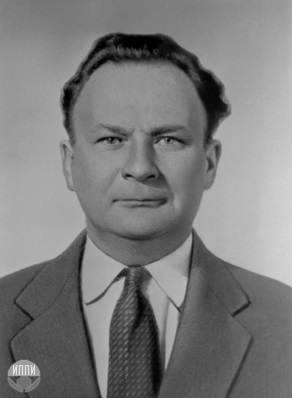
Akademik Mehdi Məmməd oğlu Mehdizadə pedaqogika elminin korifeylərindən biri, maarif quruculuğunun görkəmli təşkilatçısı kimi tanınmışdı
M.A.Prokofyev
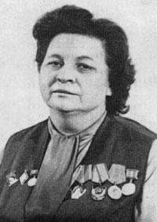
Akademik M.Mehdizadə çox nadir istedada malik alim, müdrik el ağsaqqalı kimi SSRİ Pedaqoji Elmlər Akademiyasının Rəyasət Heyətində, Akademiyanın həqiqi və müxbir üzvləri arasında böyük nüfuza malik idi
A.G.Xripkova
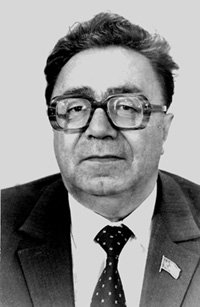
Akademik M.Mehdizadənin pedaqogika elminin, pedaqoq alimlərin inkişafında, formalaşmasında böyük zəhməti, mühüm rolu olmuşdur
M.İ.Kondakov
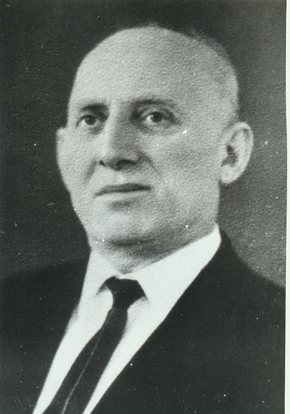
Akademik M.Mehdizadə müdrik insan, çox böyük nəzəriyyəçi pedaqoq alim və etibarlı məsləhətdaşımız idi
D.O.Lordkipianidze

Pedaqogikanın tarixi və nəzəriyyəsi sahəsində böyük alim kimi M.Mehdizadənin şöhrəti Azərbaycanın hüdudlarından çox-çox kənara yayılmışdır... Akademik Mehdi Mehdizadə sözün həqiqi mənasında pedaqogika elmimizin Günəşi idi...
Əziz İzmaylov
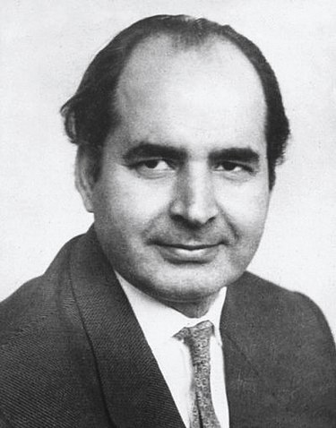
Mehdi müəllimlə söhbətlərimizdən hiss edirdim ki, o, Azərbaycan diyarının gözəl bilicisi və bələdçisidir. Bu cəhət onun vətən torpağına məhəbbətindən irəli gəlirdi...
Mikayıl Abdullayev

Azərbaycanın görkəmli elm, maarif, ictimai xadimləri arasında xüsusi mövqeyi və dəst-xətti olan Mehdi Məmməd oğlu Mehdizadə eyni zamanda təbiətən yüksək ziyalılıq mədəniyyəti ilə daha çox diqqəti cəlb edirdi
Süleyman Ələsgərov
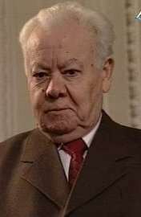
Mehdi müəllim geniş biliyə, dünyagörüşə malik bir nazir, pedaqogika sahəsində keçmiş SSRİ-də tanınmış görkəmli alim, şərəfli bir müəllim və şəxsiyyət, ləyaqətli insan, gözəl ailə başçısı kimi tanınmışdır. Özü də hər şeydən əvvəl yüksək ixtisas biliyi, səriştəsi, işlədiyi və rəhbərlik etdiyi sahədə mötəbər nüfuzu, təcrübəsi, siqləti olan şəxs kimi...
Fuad Qasımzadə
Akademik Mehdi Mehdizadə Azərbaycanda xalq təhsilinin inkişafına böyük töhfələr verən əvəzsiz bir alim, xalq maarifinin əsl fədaisi və sərkərdəsi kimi müdrik və unudulmaz şəxsiyyətlərdən biri olmuşdur.
Əziz Əfəndizadə

Mehdi müəllim Azərbaycan pedaqogika elminin parlaq nümayəndəsi idi. O, özünün elmi-təşkilati qabiliyyəti və yüksək insani keyfiyyətləri ilə Azərbaycan maarifi tarixində şərəfli bir yer tutmuşdur. Mehdi Mehdizadə Azərbaycan maarifinin zirvəsidir. Onun elmi-pedaqoji görüşləri maarifçilərimizə düzgün yol göstərən mayakdır.
Budaq Budaqov
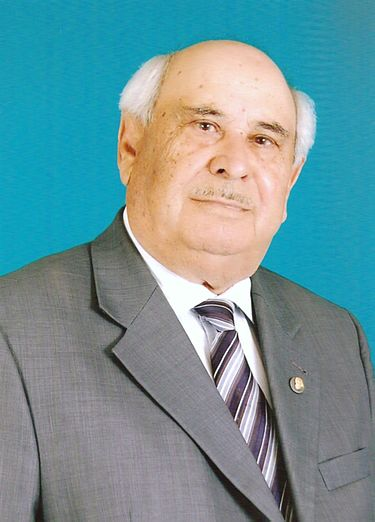
Akademik Mehdi Mehdizadə öz şəxsiyyəti – şəxsi nümunəsi ilə hər yerdə, hər zaman yüksək pedaqoji etikanı nümayiş etdirirdi. Yüksək dərəcədə mədənilik, düzlük, paklıq, ədalət, qayğıkeşlik, səmimiyyət, təvazökarlıq onun şəxsiyyətinin heyrətamiz cəhətləri idi.
Hüseyn Əhmədov
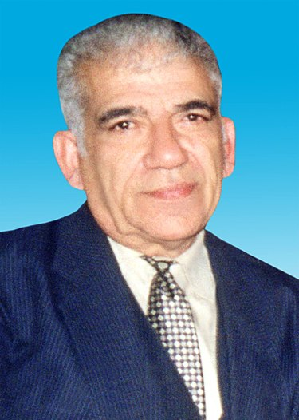
Bu qədər tanınmış, yüksək səviyyəli, böyük titullu alim olasan, amma Bəşir kimi balacaların yazılarını oxuyub qiymət verməyi unutmayasan... Bunun özü Mehdi Mehdizadənin böyüklüyünə dəlalət edir.
Bəşir Əhmədov
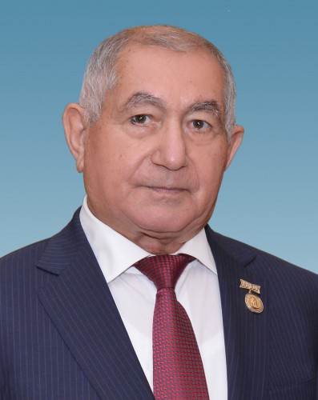
Akademik Mehdi Mehdizadənin həyatına, ömür yoluna, geniş pedaqoji fəaliyyətinə diqqətlə nəzər yetirdikdə görürük ki, o, həmişə, hər an səmərəli nəticə verən işlər görmüşdür. O, pedaqoji fəaliyyətin bütün sahələrində öz dəsti-xətti, səyi və təşəbbüskarlığı ilə diqqəti cəlb etmiş, xoş təəssürat oyatmışdır.
Zahid Qaralov
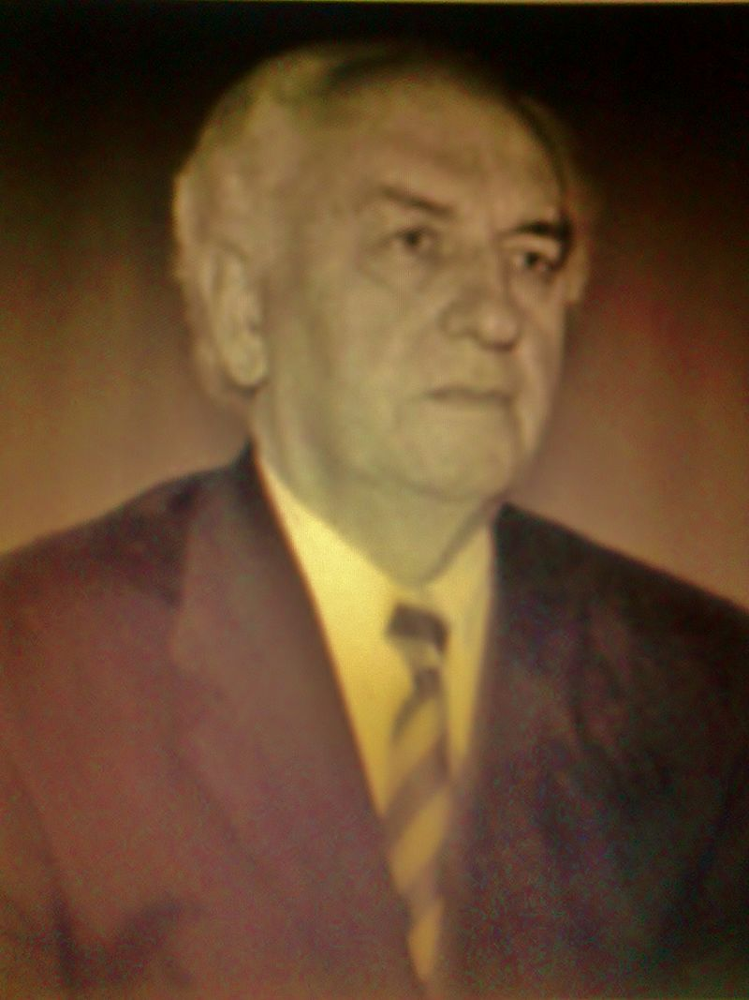
Mehdi müəllim rəsmi dövlət xadimi, məmur deyil, alim-nazir idi. Onun nazirlik vəzifəsi öz qiymətini alimlik fonunda tapırdı. Onun böyüklüyü şəxsiyyəti yüksək qiymətləndirə bilməsində idi. Təhsil naziri üçün birinci dərəcəli şərt məhz budur.
Yəhya Kərimov

Mehdi Mehdizadənin fəaliyyəti, onun şəxsiyyəti, ayrı-ayrı mənəvi keyfiyyətləri bizim üçün, xüsusən müasir rəhbər işçilər üçün örnək olmalıdır. Onun fəaliyyətində və şəxsiyyətində elə xüsusiyyətlər olmuşdur ki, onları bilməyimiz və işdə nəzərə almağımız yeni dövlət quruculuğuna xeyli fayda verə bilər.
Nurəddin Kazımov
Mehdi müəllim pedaqogika, məktəb, maarif adlanan dünya süfrəsinə çox ətirli, rayihəli çiçəklər, güllər bəxş etmişdir. Gəlin xalqımızın tarixi kökləri olan böyük şəxsiyyətlərimizi unutmayaq;
unutsaq - unudularıq.
Yusif Talıbov
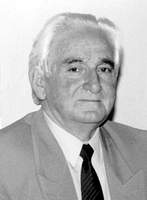
Mehdi Mehdizadə şəxsiyyəti aydın zəkası, insanlara münasibəti, danışıq mədəniyyəti, səliqəsi, etibarı ilə gözəl bir məktəb idi. Xaqaninin sözləri ilə desək, onun könlü müəllim idi...
Şəmistan Mikayılov
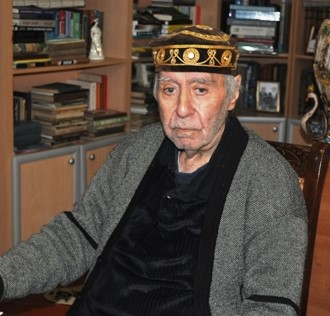
Bəzilərini səlahiyyətin böyüklüyü çaşdırır, xalqdan ayrı salır. Mehdi Mehdizadə əsrin dörddə birini nazir oldu. Bu müddətdə o, sadəliyi özünə şüar elədi. Yazılarında da, fəaliyyətində də...
İmamverdi Əbilov
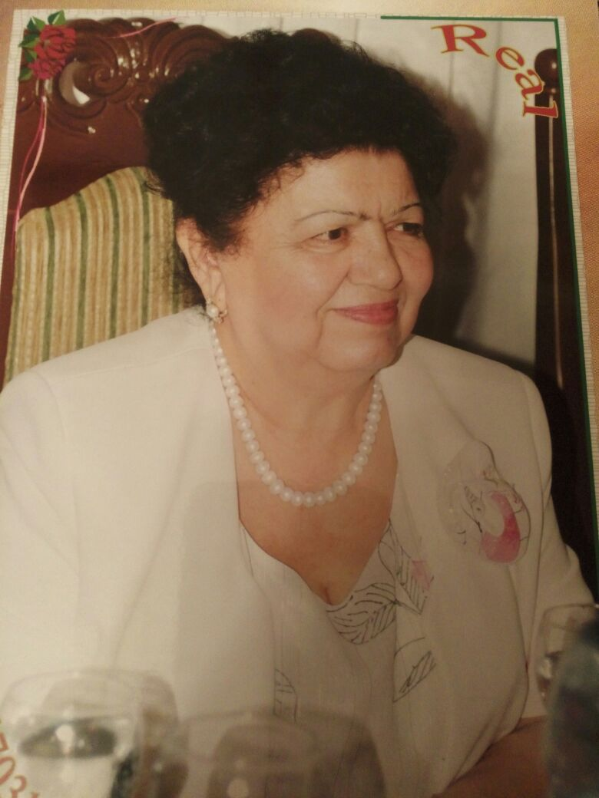
Onu son mənzilə yola salanda bir daha əmin oldum ki, xalqının xidmətində duranlar, qayəsi yaxşılıq, xeyirxahlıq etmək olanlar dünyalarını dəyişsələr də, mənən əbədi olaraq yaşayırlar.
Rəfiqə Mustafayeva
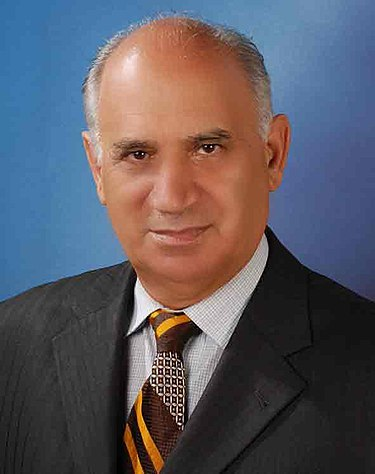
Mirzə Fətəli Axundzadə nəsrdə, Səməd Vurğun poeziyada, Üzeyir Hacıbəyli musiqidə kim idisə, akademik Mehdi Mehdizadə də təhsilimizdə o idi.
Əjdər Ağayev

…Azərbaycanda bizim öyrənməyi öyrəndiyimiz böyük müəllimlərimiz olub: Üzeyir Hacıbəyov, Firudin Köçərli, Mehdi Mehdizadə, Mir Cəlal, Abbas Zamanov və adları bu şərəfli siyahıda davam etdirilməyən onlarla digər müəllim. Onlar dünən də olub, bu gün də var, gələcəkdə də olacaqlar.
Mikayıl Cabbarov
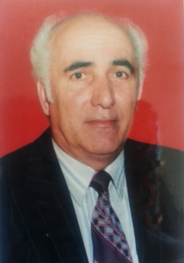
SSRİ Pedaqoji Elmlər Akademiyasının həqiqi üzvü, YUNESKO-nun Təhsil Komitəsinin üzvü (1961-1964) olmuş Mehdi Mehdizadə Respublikamızda maarif quruculuğuna, pedaqogika elminin inkişafına, elmi-pedaqoji kadrların yetişməsinə gərgin əmək sərf etmişdir. O, sözün həqiqi mənasında ötən əsrin böyük maarif korifeyi, canlı tarixi olmuşdur.
Vidadi Xəlilov

Akademik Mehdi Mehdizadənin elmi-pedaqoji əsərləri, məqalə və çıxışlarında irəli sürdüyü fikirlər bu gün də öz əhəmiyyətini saxlayır. Onlar bizim milli pedaqogikamızın ən qiymətli incilərindəndir. Görkəmli pedaqoqun həyatı da böyük bir epoxanın salnaməsidir. Onu təfərrüatı ilə öyrənib gənc nəslə çatdırmaq, ilk növbədə onu tanıyanların vəzifəsidir. Gələcək nəsillər isə illər ötdükcə onun dəyərli, nəsillərə nümunə olan irsindən bəhrələnəcəklər.
Nəcəf Nəcəfov

Tarixdə qalmaq üçün, hər şeydən əvvəl, insanların qəlbində, xatirələrində yaşamaq lazımdır, bizim Mehdi müəllim kimi. Mənim pedaqoji sahə ilə bağlılığımda, gələcəyimiz olan təhsilə xüsusi önəm verməyimdə və təhsil işçilərinə hədsiz rəğbət bəsləməyimdə Mehdi müəllimin şəxsi nümunəsinin böyük rolu olub.